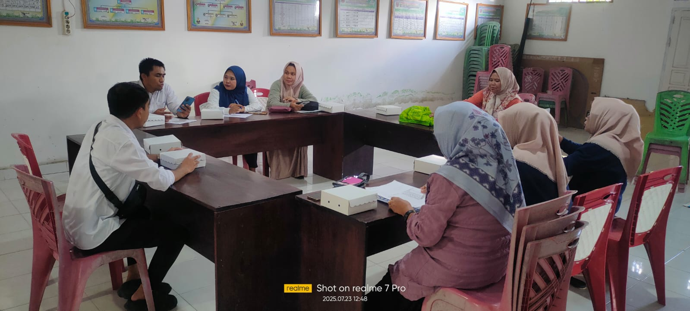
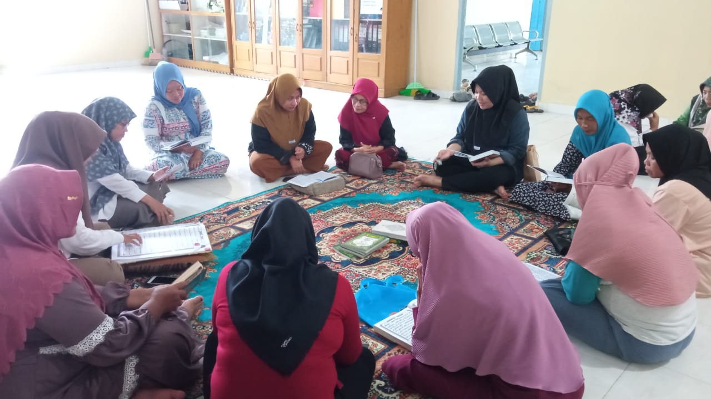

SELAMAT DATANG DI WEBSITE RESMI DESA
Website ini menyajikan informasi mengenai pemerintahan, pelayanan publik, berita desa, agenda, dan potensi Desa Dungaliyo.
📄 Profil Desa
👥 Pemerintahan
📊 Data Desa
📰 Berita
🖼️ Galeri
📬 Aspirasi
Berita Terbaru
Semarak Posyandu Nasional Digelar di Kantor Desa Dungaliyo
Ringkasan singkat berita desa...
Baca selengkapnyaJudul Berita 2
Dungaliyo, 29 April 2026 — Pemerintah Desa Dungaliyo melaksanakan kegiatan Semarak Posyandu Nasional pada hari Rabu, 29 April 2026, bertempat di Kantor Desa Dungaliyo. Kegiatan ini berlangsung dengan penuh antusias dan dihadiri oleh kader posyandu, tenaga kesehatan, aparat desa, serta masyarakat, khususnya ibu dan balita.
Baca selengkapnya